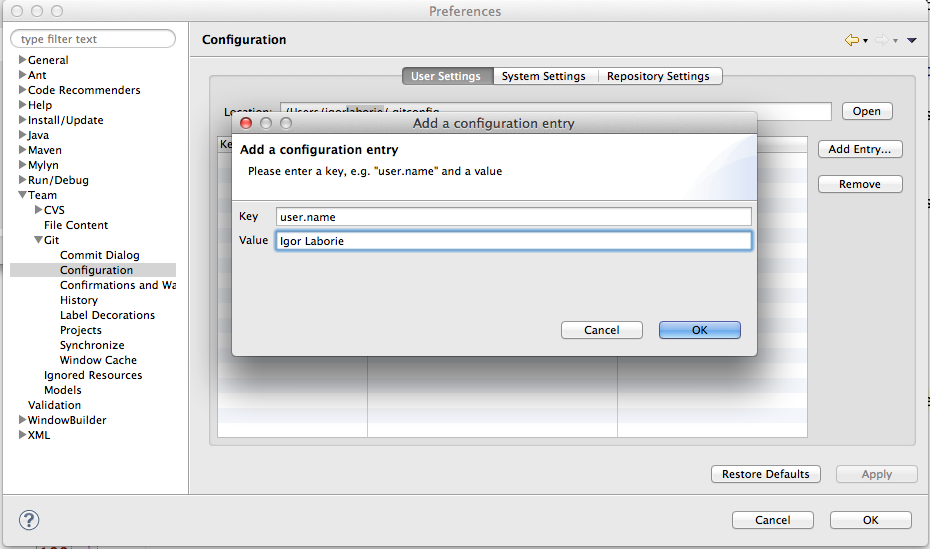

Installation & Configuration
You will need a Java runtime environment (JRE) to use Eclipse (Java SE 6 or greater is recommended).
-
Download the suitable Eclipse
- eclipse-java-juno-SR2-win32.zip
- eclipse-java-juno-SR2-win32-x86_64.zip
- eclipse-java-juno-SR2-linux-gtk.tar.gz
- eclipse-java-juno-SR2-macosx-cocoa-x86_64.tar.gz
- eclipse-java-juno-SR2-macosx-cocoa.tar.gz
Note
The EGit plugin is already packaged into the Eclipse IDE for Java Developers (Juno) -
Simply unpack the package, then launch the executable in the
eclipse/folder. -
Note
Git and EGit use the HOME folder to store user configuration into the~/.gitconfigfileWindows only
You can set the HOME environment variable (if not set EGit will ask when you use EGit for the first time).
If the HOME variable is not defined the home directory will be calculated by concatenating HOMEDRIVE and HOMEPATH. -
Hint
You can set this information later
Git needs to know who (user & email) commits to a repository. Don’t worry: when EGit needs this information for the first time it will ask you.- go to
Window > Preferences > Team > Git > Configuration -
Click
New Entryand enter the keyuser.name -
Click
New Entryand enter the keyuser.email
- go to
-
Take a quick look at
- The preferences:
Window > Preferences > Team > Git - The help:
Help > Help Contents > EGit Documentation - The perspective:
Window > Open perspective > Others ... > Git Repository Exploring - Views:
Window > Show View > Others ... > Git
- The preferences: